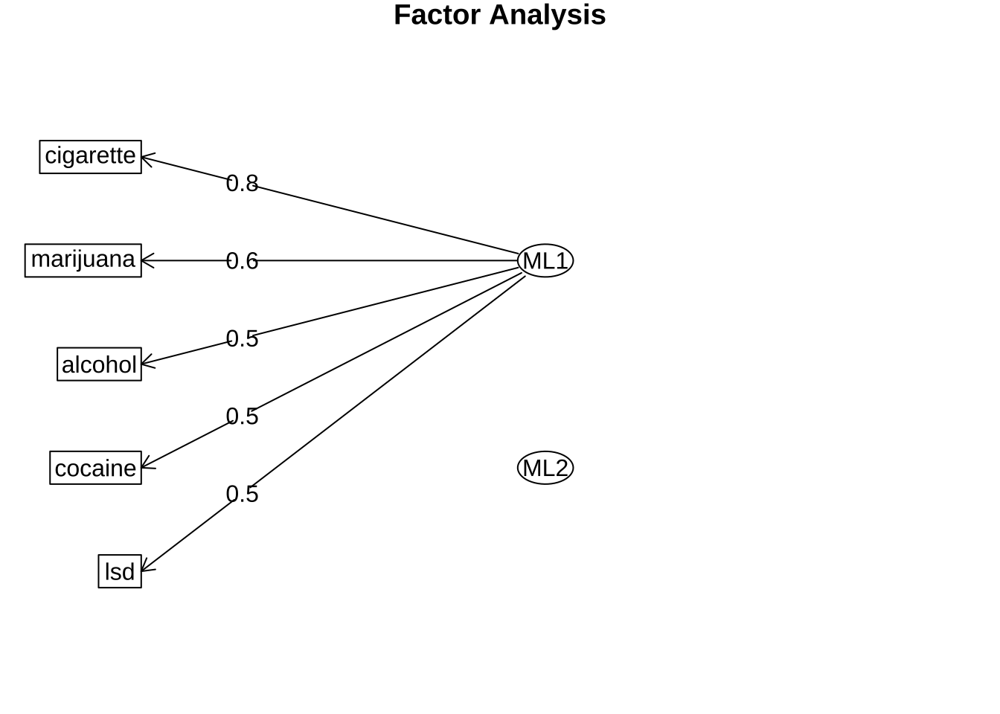
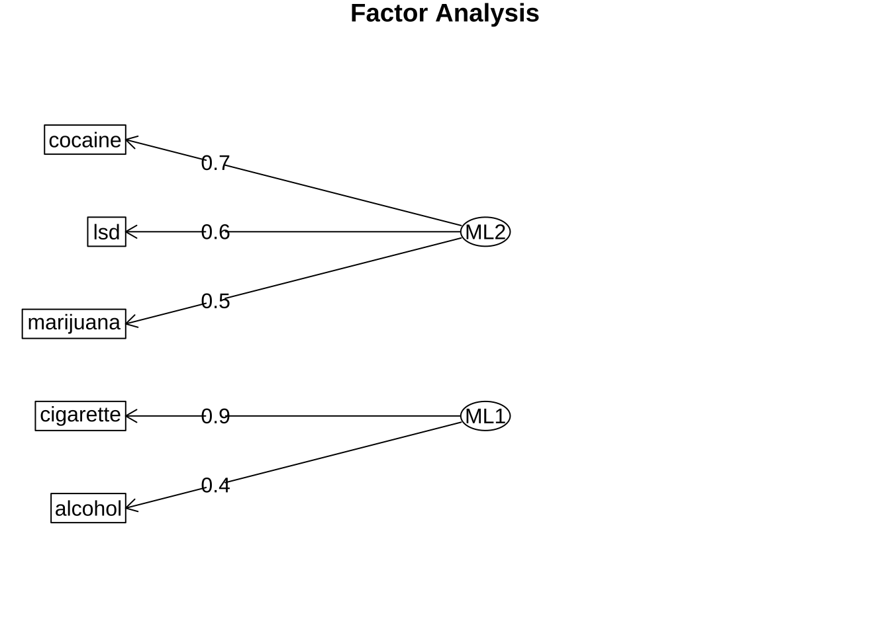

library(tidyverse)
library(here)
library(knitr)
library(mvtnorm)
library(ggfortify)
library(HSAUR2)
library(pheatmap)
library(psych)
#아래 3 문장은 한글을 포함한 ggplot 그림이 포함된 HTML, PDF로 만드는 경우 사용
library(showtext)
#font_add_google("Nanum Pen Script", "gl")
font_add_google(name = "Noto Sans KR", family = "noto")
showtext_auto()8 탐색적 인자 분석
인자분석(factor analysis)은 관측된 여러 변수들 간의 상관관계를 설명하기 위해, 관측된 여러 개의 변수들이 소수의 잠재적 요인(latent factors)에 의해 영향을 받는다는 가정 하에 사용되는 통계적 모형이다.
다변량 관측자료에 포함된 정보가 소수의 잠재 요인(latent factors)으로부터 생성된다고 가정하는 것은 매우 흥미로운 모형이다. 실제로 소수의 잠재적 요인이 다양한 정보들과 관련되어 있다면 현실에 나타나는 여러가지 다양한 현상들을 깊이 이해하고 잘 설명해 줄 수 있다. 인자분석은 복잡한 데이터 구조를 단순화하고 이해하는 데 도움을 준다.
또한 심리학, 사화학, 경제학에서는 자연과학과 다르게 연구의 대상이 되는 개념을 직접 측정할 수 없는 경우가 흔하게 일어난다. 예를 들어 자연과학에서 온도(temperature)라는 개념은 과학적인 정의에 따라서 다양한 방법으로 쉽고 정확하게 측정할 수 있다. 하지만 지능(intelligence), 스트레스(stress), 고통(pain), 만족도와 같은 연구 대상들은 온도와 다르게 정의도 어렵고 측정은 더 어려운 것이 현실이다.
예를 들어 학교에서 배우는 여러 과목의 시험점수들에 개인이 가지고 있는 지능(intelligence)라는 잠재변수가 공통적으로 영향을 미친다고 가정할 수 있다. 여기서 지능은 측정할 수 없으며 시험의 결과는 개인이 가진 지능에 영향을 받으며 점수로 측정값을 구할 수 있다.
이렇게 정의와 측정이 어려운 개념을 직접 관찰할 수 없는 요인(latent factor; 인자)으로 보고 이러한 요인에 영향을 받아 그 값을 실제로 관측할 수 있는 다양한 파생적인 변수(manifest variables; 명시변수, 관측변수)들을 관측할 수 있다고 가정할 수 있다. 이렇게 소수의 인자로 다수의 관측 가능한 변수들의 관계를 선형 관계로 가정하고 해석하는 분석을 인자 분석(factor analysis)라고 한다. 인자분석은 심리학, 마케팅, 경제학, 정치학 등 매우 다양한 분야에서도 중요한 분석 방법으로 사용된다.
인자 분석은 두 가지 유형으로 나뉜다. 첫 번쨰는 탐색적 요인분석(explanatory factor analysis)으로, 어떤 관측변수가 어떤 요인과 관련되는지에 대한 가정을 하지 않은 채 관측변수와 요인 간의 관계를 조사하는 데 사용된다. 확증적 요인 분석(confirmatory factor analysis)으로, 사전에 가정된 특정 요인 모델이 관측 변수들 간의 분산이나 상관관계에 적합한지 검증하는 데 사용된다. 이 장에서는 탐색적 요인분석만을 다루고 확증적 요인 분석은 다루지 않을 것이다.
인자분석의 목적과 방법을 간단하게 요약하면 다음과 같이 말할 수 있다.
가정된 인자(factor) 또는 잠재변수(latent variable)와 측정변수들의 관계를 찾는것이 탐색적 인자분석의 목적이다.
인자는 측정할 수 없는 변수로서 각 측정변수에 영향을 미친다고 가정한다.
여러 개의 관측변수에 영향을 미치는 공통의 잠재변수는 공통인자(common factor)라고 말한다.
8.1 인자 모형
8.1.1 단순 인자 모형
이 장에서는 단순 인자 모형(one factor model)을 사용하여 인자분석의 기본 개념을 설명한다. 단순 인자 모형은 하나의 잠재 요인(factor)이 여러 관측 변수들에 영향을 미친다고 가정하는 모델이다.
탐색적 인자 분석을 이용한 단순 인자 모형은 Spearman 이 1904년 학생들의 시험 성적과 지능에 대한 모형을 고려하면서 처음 제안되었다. 이제 Spearman 이 제안한 단순 인자 분석에 대한 통계적 가정과 모형을 살펴보자.
Spearman 은 세 과목의 시험점수에 대한 자료를 얻어서 다음과 같은 상관행렬 \(\pmb R\)을 얻었다.
- \(X_1\) : Classics
- \(X_2\) : French
- \(X_3\) : English
\[ \pmb R= \begin{bmatrix} 1.00 & & \\ 0.83 & 1.00 & \\ 0.78 & 0.67 & 1.0 \end{bmatrix} \]
지능(intelligence)을 나타내는 잠재 변수인 \(f\)가 3개의 시험 점수와 다음과 같은 관계를 가진다고 가정하는 것이 일인자 인자 모형(one factor model)이다. 모형은 다음과 같은 수식으로 표현된다.
\[ \begin{aligned} X_1 & = \lambda_1 f + u_1 \\ X_2 & = \lambda_2 f + u_2 \\ X_3 & = \lambda_3 f + u_3 \end{aligned} \tag{8.1}\]
식 8.1 에서 제시된 일인자 모형에 대한 특성은 다음과 같다.
\(f\) 는 공통 인자(common factor, latent variable)로 관측할 수 없는 확률 변수(random variable)이다.
\(\lambda_1, \lambda_2, \lambda_3\)는 인자 적재값 (factor loading) 이라고 부르며 고정된 값을 가진 계수이다.
\(u_i\) 는 임의 변동(random disturbance)으로 점수 \(X_i\) 에 반영되는 양으로 개인의 특정한 능력(specific factor) 과 단순 오차(random error)의 합으로 구성된다.
식 8.1 에서 정의된 항들의 분포 가정과 관측 변수의 분산 구조는 다음과 같다.
\(X_i\)’s 는 평균이 0 이고 분산이 1인 확률변수이다 (표준화)
\(f\) 는 평균이 0 이고 분산이 1인 확률변수이다.
\(u_i\)’s 평균이 0 이고 분산이 \(\psi_i\) 인 확률변수이다
\(u_i\) 들은 서로 독립이다.
\(f\) 와 \(u_i\) 들도 서로 독립이다.
이제 관측 변수 \(X_i\)’s 의 분산과 공분산을 계산하여 식 8.1 에서 제시된 모형이 상관행렬 \(\pmb R\)를 어떻게 설명하는지 살펴보자.
먼저 \(X_i\)’s 의 분산을 계산하면 다음과 같다. \[ \begin{aligned} V(X_i) & \equiv 1 \\ &= V(\lambda_i f +u_i) \\ &= \lambda_i^2 V(f) + V(u_i) \\ &= \lambda_i^2 +\psi_i \end{aligned} \]
다음으로 \(X_i\)’s 의 공분산을 계산하면 다음과 같다. \[ \begin{aligned} Cov(X_i,X_j) &= Cov(\lambda_i f +u_i, \lambda_j f + u_j) \\ &= \lambda_i \lambda_j Cov(f,f) + \lambda_i Cov(f,u_j) + \lambda_j Cov(f, u_i) +Cov(u_i, u_j) \\ &= \lambda_i \lambda_j V(f) +0 +0+0 \\ &= \lambda_i \lambda_j \\ &\equiv corr(X_i,X_j) \quad \text{since } V(X_i)=1 \end{aligned} \tag{8.2}\]
8.1.2 k-인자 모형
이제 식 8.1 에 나타난 일인자 모형을 확장하여 k 개의 인자를 가지는 k-인자 모형을 고려할 수 있다. 관측이 가능한 확률 변수의 개수는 \(q\) 개라고 하자.
여기서 인자 분석의 목적에 따라서 인자의 개수 \(k\) 는 가능한 확률 변수의 개수는 \(q\) 보다 작게 설정하는 것이 일반적이다 (\(k \le q\)).
\[ \begin{aligned} X_1 &= \lambda_{11} f_1 + \lambda_{12} f_2 + \dots \lambda_{1k} f_k +u_1 \\ X_2 &= \lambda_{21} f_1 + \lambda_{22} f_2 + \dots \lambda_{2k} f_k +u_2 \\ & \dots \dots \\ X_q &= \lambda_{q1} f_1 + \lambda_{q2} f_2 + \dots \lambda_{qk} f_k +u_q \\ \end{aligned} \tag{8.3}\]
식 8.3 에서 정의된 항들의 분포 가정과 관측 변수의 분산 구조는 다음과 같다.
확률 변수 \(X_i\)’s 는 평균이 0 이고 분산이 1인 확률변수이다 (표준화)
k-인자 벡터 \(\pmb f\) 는 평균이 \(\pmb 0\) 이고 분산이 \(\pmb I_k\) 인 확률벡터이다.
\[ E(\pmb f) =0, \quad Var(\pmb f) = \pmb I_k \]
- \(\pmb u\)’s 평균이 \(\pmb 0\) 이고 각 분산이 \(\psi_i\) 이며 서로 독립인 확률변수이다
\[ E(\pmb u) =0, \quad Var(\pmb u) = \pmb \Psi = \begin{bmatrix} \psi_1 & 0 & \dots & 0 \\ 0 & \psi_2 & \dots & 0 \\ & & \dots & \\ 0 & 0 & \dots & \psi_q \\ \end{bmatrix} \]
- \(\pmb f\) 와 \(\pmb u\) 들도 서로 독립이다.
식 8.3 의 k-인자 모형을 행렬식으로 표현하면 다음과 같다.
\[ \pmb X = \pmb \Lambda \pmb f + \pmb u \tag{8.4}\]
여기서 \(\pmb \Lambda\)는 다음과 같은 \(q \times k\) 행렬이다 \[ \Lambda = \begin{bmatrix} \lambda_{11} & \lambda_{12} & \dots & \lambda_{1k} \\ \lambda_{21} & \lambda_{22} & \dots & \lambda_{2k} \\ & & \dots & \\ \lambda_{q1} & \lambda_{q2} & \dots & \lambda_{qk} \\ \end{bmatrix} \]
식 8.3 에서 제시된 k-인자 모형과 통계적 가정에 따라서 관측 변수들의 분산 구조는 다음과 같다.
\[ \begin{aligned} Var(X_i) & = Var(\lambda_{i1} f_1 + \lambda_{i2} f_2 + \dots \lambda_{ik} f_k +u_i ) \\ & = \sum_{l=1}^q \lambda_{il}^2 + \psi_i \\ & = h_i^2 + \psi_i \\ & \equiv 1 \end{aligned} \tag{8.5}\]
식 8.5 에서 나타난 분산의 두 부분을 다음과 같이 부른다.
- \(h_i^2 = \sum_{l=1}^q \lambda_{il}^2\)를 변수의 공통성(communality)라고 부른다.
- 공통성(communality)의 의미는 관측변수들 모두가 공통으로 영향을 받는 k개의 인자들에 의해 설명되는 분산의 크기를 나타낸다. 공통성이 크다는 것은 해당 변수가 인자들에 의해 잘 설명된다는 것을 의미한다.
- \(\psi_i\)는 임의변동(random disturbance) 또는 유일분산(unique variance)라 부른다.
- 임의변동은 변수 \(X_i\)의 분산 중에서 인자들에 의해 설명되지 않는 부분을 나타낸다. 임의변동이 크다는 것은 해당 변수가 공통 인자들이 아닌 특정한 요인에 의해 영향을 더 많이 받는다는 것을 의미한다.
각 변수간의 상관 관계는 다음과 같다. 변수간의 상관관계는 특수분산과 관계없다.
\[ \begin{aligned} cor(X_i, X_j) & = cor( \sum_{l=1}^q \lambda_{il} f_l +u_i , \sum_{l=1}^q \lambda_{jl} f_l +u_j ) \\ & = \sum_{l=1}^q \lambda_{il} \lambda_{jl} Var(f_l) + 0 +0 +0 \\ & = \sum_{l=1}^q \lambda_{il} \lambda_{jl} \end{aligned} \]
위의 결과와 관측벡터에 대한 표준화 가정을 이용하면 관측벡터 \(\pmb X\) 의 공분산은 다음과 같이 상관계수 행렬 \(\pmb R\) 로 나타난다.
\[ \begin{aligned} \pmb \Sigma & = Cov( \pmb X) \\ & = Cov(\pmb \Lambda \pmb f + \pmb u) \\ & = \pmb \Lambda Cov(\pmb f) \pmb \Lambda^t + Cov(\pmb u) \\ & = \pmb \Lambda \pmb \Lambda^t + \pmb \Psi \\ & \equiv \pmb R \end{aligned} \tag{8.6}\] 여기서 \(\pmb \Psi\)는 특수분산 \(\psi_i\)들을 대각원소로 가지는 대각행렬이다.
\[ \pmb \Psi = \begin{bmatrix} \psi_1 & 0 & \dots & 0 \\ 0 & \psi_2 & \dots & 0 \\ & & \dots & \\ 0 & 0 & \dots & \psi_q \\ \end{bmatrix} \]
8.1.3 척도 불변성
지금까지 관측변수 \(X_i\)가 평균은 0 이고(언제나 관측값에서 평균을 빼면 가능하다) 분산이 1 이라고 표준화 가정을 사용하였다. 이제 관측변수 \(X_i\)가의 분산이 1이 아니라고 가정하고 \(X_i\)에 대한 척도 변환(scale transformation)을 생각해보자. 즉, 새로운 확률변수 \(Y_i\) 를 \(X_i\)에 대한 척도 변환으로 다음과 같이 정의한다.
\[ Y_i =c_i X_i, \quad i=1,2,3\dots, q \]
행렬 \(\pmb C\)를 \(c_i\) 들로 이루어진 대각 행렬이라고 한다면
\[ \pmb C = \begin{bmatrix} c_1 & 0 & \dots & 0 \\ 0 & c_2 & \dots & 0 \\ & & \dots & \\ 0 & 0 & \dots & c_q \\ \end{bmatrix} \]
새로운 관측값 확률벡터는 \(\pmb Y = \pmb C \pmb X\)이고 변환된 \(\pmb Y\)의 공분산은 식 8.6 에 의하여 다음과 같이 쓸 수 있다.
\[ \begin{aligned} Cov(\pmb Y) & = Cov(\pmb C \pmb X) \\ & = \pmb C Cov(\pmb X) \pmb C^t \\ & = \pmb C \pmb \Lambda \pmb \Lambda^t \pmb C^t + \pmb C \pmb \Psi \pmb C^t \\ \end{aligned} \]
위의 식에서 \(\pmb {\Lambda}_y = \pmb C \pmb \Lambda\)로 정의하고 \({\pmb u}_y= \pmb C \pmb u\) 로 놓으면 변환된 확률 벡터 \(\pmb Y\)에 대한 인자모형은 다음과 같다.
\[ \pmb Y = {\pmb \Lambda}_y \pmb f + {\pmb u}_y \tag{8.7}\]
식 8.7 을 척도 변환과 함께 풀어 쓰면 다음과 같다.
\[ \begin{aligned} Y_1 &= c_1 \lambda_{11} f_1 + c_1 \lambda_{12} f_2 + \dots + c_1 \lambda_{1k} f_k +c_1 u_1 \\ Y_2 &= c_2 \lambda_{21} f_1 + c_2 \lambda_{22} f_2 + \dots + c_2\lambda_{2k} f_k +c_2u_2 \\ & \dots \\ Y_q &= c_q \lambda_{q1} f_1 + c_q \lambda_{q2} f_2 + \dots + c_q \lambda_{qk} f_k +c_qu_q \\ \end{aligned} \]
위의 식에서 볼 수 있듯이 척도변환을 하면 각 인자의 적재값과 임의변동의 값도 같은 척도로 변하는 것을 알 수 있다. 만약에 \(c_i\)를 관측변수의 표준편차 \(s_i\) 의 역수로 놓으면 \(c_i = 1/s_i\) \(\pmb Y\)의 공분산 행렬은 \(\pmb X\)의 상관계수 행렬이 된다.
따라서 인자분석을 하는 경우 \(\pmb X\)의 공분산 행렬을 이용하는 것과 상관계수 행렬을 이용하는 것이 일치하는 결과를 준다. 일치하는 결과라는 것은 척도변환에 의하여 언제나 대응되는 계수를 구할 수 있다는 의미이다 (척도의 불변성, scale invariance)
참고로 주성분 분석은 공분산 행렬을 이용하는 경우와 상관계수 행렬을 이용하는 경우 척도가 달라지기 떄문에 동일한 결과를 얻을 수 없다.
8.1.4 인자의 비유일성
임의의 \(k \times k\)의 직교행렬 \(\pmb P\)을 생각하고 인자모형을 변환하여 보자
\[ \begin{aligned} \pmb X & = \pmb \Lambda \pmb f + \pmb u \\ & = \pmb \Lambda \pmb P \pmb P^t \pmb f + \pmb u \\ & = (\pmb \Lambda \pmb P) (\pmb P^t \pmb f) + \pmb u \\ & = \pmb \Lambda_1 \pmb f_1 + \pmb u \end{aligned} \] 여기서 \(\pmb \Lambda_1 = \pmb \Lambda \pmb P\)이고 \(\pmb f_1 = \pmb P^t \pmb f\)이다. 위의 새로운 인자 모형에서의 인자 \(\pmb f_1\)의 분포와 관측변수 \(\pmb X\)의 공분산은 윈래 인자 \(\pmb f\)의 분포와 동일한다.
\[ E(\pmb f_1) =E( \pmb P^t \pmb f)=\pmb P^t E(\pmb f) =0, \quad Cov(\pmb f_1)=\pmb P^t Var(\pmb f) \pmb P=\pmb P^t \pmb P =\pmb I \]
따라서 새로운 인자 모형에서 관측벡터 \(\pmb X\)의 공분산은 다음과 같다.
\[ Cov( \pmb X) = Cov ({\pmb \Lambda}_1 {\pmb f}_1 + \pmb u) = Cov ({\pmb \Lambda} {\pmb f} + \pmb u) = \pmb \Lambda \pmb \Lambda^t + \pmb \Psi \]
따라서 인자적재값은 같은 자료라도 유일하게 존재하지 않는다(non-uniquesness). 더나아가 인자의 적재행렬에 제한 조건을 주면 유일하게 존재할 수 있다(인자의 회전; factor rotation)
8.2 모형의 추정
이제 인자 모형을 추정하는 방법에 대해서 알아보자.
8.2.1 단순 인자모형
먼저 식 8.1 에 나타난 단순 인자 모형과 공분산에 대한 결과 식 8.2 를 고려하면 다음과 같은 방정식을 유도할 수 있다.
\[ \begin{aligned} \pmb R & = \pmb \Lambda \pmb \Lambda^t + \pmb \Psi \\ & = \begin{bmatrix} \lambda_1 \\ \lambda_2 \\ \lambda_3 \\ \end{bmatrix} \begin{bmatrix} \lambda_1 & \lambda_2 & \lambda_3 \\ \end{bmatrix} + \begin{bmatrix} \psi_1 & 0 & 0 \\ 0 & \psi_2 & 0 \\ 0 & 0 & \psi_3 \\ \end{bmatrix} \\ & = \begin{bmatrix} \lambda_1^2 + \psi_1 & \lambda_1 \lambda_2 & \lambda_1 \lambda_3 \\ \lambda_2 \lambda_1 & \lambda_2^2 + \psi_2 & \lambda_2 \lambda_3 \\ \lambda_3 \lambda_1 & \lambda_3 \lambda_2 & \lambda_3^2 + \psi_3 \\ \end{bmatrix} \end{aligned} \] 실제 관측한 3개의 시험점수의 상관행렬 \(\pmb R\)를 위의 식에 대입하면 다음과 같은 방정식을 얻는다.
\[ \begin{aligned} \lambda_1 \lambda_2 & = 0.83 \\ \lambda_1 \lambda_3 & = 0.78 \\ \lambda_2 \lambda_3 & = 0.67 \\ \lambda_1^2 + \psi_1 & = 1 \\ \lambda_2^2 + \psi_2 & = 1 \\ \lambda_3^2 + \psi_3 & = 1 \\ \end{aligned} \]
위의 비선형 방정식 시스템을 풀면 다음과 같은 해를 얻는다. 이러한 해로 식 8.1 에 나타난 단순 인자 모형의 인자와 분산성분을 추정할 수 있다.
\[ \begin{aligned} \hat \lambda_1 & = 0.99, \quad \hat \psi_1 = 0.02 \\ \hat \lambda_2 & = 0.84, \quad \hat \psi_2 = 0.3 \\ \hat \lambda_3 & = 0.79, \quad \hat \psi_3 = 0.38 \\ \end{aligned} \]
8.2.2 최대 가능도 추정법
탐색적 인자분석에서 인자 적재값과 특수분산을 추정하는 방법으로 최대 가능도 추정법(Maximum Likelihood Estimation; MLE)을 사용할 수 있다. 최대 가능도 추정법은 관측된 데이터가 주어진 모형에 의해 생성될 확률을 최대화하는 모수 값을 찾는 방법이다.
다변량 정규분포 모형에서 분산 행렬 \(\pmb \Sigma\)가 인자 모형에 의해 식 8.6 과 같이 나타난다고 가정하고 최대 가능도 추정법을 적용할 수 있다.
이 장에서는 최대 가능도 추정법에 대한 자세한 설명은 생략하고 주성분 분석을 이용한 간단한 모형 추정법을 다음 절에 소개하려고 한다.
8.2.3 주성분 인자분석
탐색적 인자분석에서 요인의 초기 추정값을 얻는 방법으로 주성분분석을 사용할 수 있다. 주성분분석를 통해 얻은 상위 몇 개의 주성분이 데이터의 분산을 대부분 설명한다면, 이 주성분들을 잠재요인의 초기 근사치로 사용할 수 있다.
이러한 접근 방법을 주성분 인자분석(Principal Component Factor Analysis) 이라고 부른다.
\(q\)-차원의 임의 벡터 \(\pmb X^t=(X_1,X_2,\dots, X_q)\) 가 평균이 0이고 공분산이 \(\pmb \Sigma\)이라 가정하자.
먼저 표본 공분산 행렬 \(\hat {\pmb \Sigma}\)을 이용하여 주성분 분석을 실시한다.
\[ \begin{aligned} Z_1 &= a_{11} X_1 + a_{12} X_2 + \dots a_{1q} X_q \\ Z_2 &= a_{21} X_1 + a_{22} X_2 + \dots a_{2q} X_q \\ & \dots \\ Z_q &= a_{q1} X_1 + a_{q2} X_2 + \dots a_{qq} X_q \\ \end{aligned} \] 위의 주성분 분석의 결과를 행렬식으로 나타내면 다음과 같다.
\[ \pmb Z = \pmb A \pmb X \]
행렬 \(\pmb A\)의 역행렬은 섹션 6.2.4 에 의하여 표본 공분산 행렬에 대한 고유벡터 행렬이므로 직교행렬이다 (\(\pmb A \pmb A^t = \pmb I\)). 따라서 다음과 같은 역변환을 고려한다.
\[ \pmb X = \pmb A^t \pmb Z \] 위의 식을 다시 쓰면 다음과 같다.
\[ \begin{aligned} X_1 &= a_{11} Z_1 + a_{21} Z_2 + \dots a_{q1} Z_q \\ X_2 &= a_{12} Z_1 + a_{22} Z_2 + \dots a_{q2} Z_q \\ & \dots \\ X_q &= a_{1q} Z_1 + a_{2q} Z_2 + \dots a_{qq} Z_q \\ \end{aligned} \] 이제 \(q\) 개의 주성분들 중에서 \(k<q\)개의 주성분을 선택한다. 선택된 주성분을 인자로 생각할 수 있다. \[ \begin{aligned} X_1 &= a_{11} Z_1 + a_{21} Z_2 + \dots a_{k1} Z_k +u_1 \\ X_2 &= a_{12} Z_1 + a_{22} Z_2 + \dots a_{k2} Z_k + u_2 \\ & \dots \\ X_q &= a_{1q} Z_1 + a_{2q} Z_2 + \dots a_{kq} Z_k + u_3 \\ \end{aligned} \tag{8.8}\]
여기서 유의할 점은 \(u_i\) 는 나머지 주성분 \(Z_{k+1}, Z_{k+2},\dots ,Z_q\)의 선형조합으로 사실 서로 독립은 아니다.
마지막으로 인자의 분포 조건에 만추기 위하여 \(Z_i\)들을 표준화한다. \(i\) 번째 주상분의 분산은 표본 공분산 행렬의 \(i\) 번째 고유값이므로 (\(Var(Z_i)=\lambda_i\)) 각 \(Z_i\)를 고유값의 제곱근으로 나누어 주고 각 계수에 곱해준다.
\[ f_i = Z_i /\sqrt{\lambda_i}, \quad \lambda_{ij} = \sqrt{\lambda_i} a_{ji} \]
이렇게 표준화하면 다음과 같이 주성분을 이용한 인자모형을 구할 수 있다
\[ \begin{aligned} X_1 &= \lambda_{11} f_1 + \lambda_{12} f_2 + \dots \lambda_{1k} f_k +u_1 \\ X_2 &= \lambda_{21} f_1 + \lambda_{22} f_2 + \dots \lambda_{2k} f_k +u_2 \\ & \dots \\ X_q &= \lambda_{q1} f_1 + \lambda_{q2} f_2 + \dots \lambda_{qk} f_k +u_q \\ \end{aligned} \]
8.2.4 인자의 선택과 회전
8.2.4.1 인자분석 개수의 추정
관측된 공분산이나 상관관계를 적절히 표현할 수 있는 인자의 개수 \(k\)의 결정이 중요하다. 인자의 개수를 결정하는 방법으로 다음과 같은 방법들이 있다.
먼저, 최대가능도 추정법에서 가능도비 검정을 이용하여 인자의 개수를 가설 검정의 형식으로 정할 수 있다. 귀무가설 \(H_0\) 에서 인자의 개수를 k개로 하여 가능도비 검정이 가능하다. 없다.
두 번째로 탐색적 인자 분석에서는 개수에 대한 여러 개의 후보값을 고려하여 주성분 분서과 유사한 방법으로 적절한 개수를 결정한다.
8.2.4.2 인자의 회전
섹션 8.1.4 에서 설명한 바와 같이 인자 모형에서 인자의 적재값은 유일하지 않다. 인자의 적재값을 유일하게 만들기 위하여 여러 가지 제약식을 사용할 수 있다.
식 8.4 에서 다음과 같이 주어지는 행렬 \(G\)이 대각행렬이 되고 대각원소들이 작아지는 순서로 되는 인자를 선택하면 주성분분석에서와 유사하게 인자의 중요성이 분산을 설명하는 순서대로 정렬된다.
\[ \pmb G = \pmb \Lambda^t \pmb \Psi^{-1} \pmb \Lambda, \quad \pmb G \text{ is diagonal with decreasing elements} \] 이러한 제약 조건은 첫 번째 인자가 관측 변수들의 공분산에 최대 기여를 하도록 설정하며, 두 번째 인자는 첫 번째 인자와 상관관계가 없으면서 이 분산에 최대 기여를 하도록 한다. 이와 같은 과정이 반복된다(이러한 조건은 주성분 분석과 내우 유사하다). 위의 제약조건은 Λ가 열의 부호 변경 가능성을 제외하고 유일하게 결정되도록 보장한다.
참고할 사항은 위와 같은 제약 조건은 참모형, 즉 유일한 \(\pmb \Lambda\) 을 찾는 방법이 아니라 해를 유일하게 만들어 주는 임의의 제약 조건(arbitrary constraint) 를 적용하는 것이다.
인자의 적재값이 유일하게 주어지는 제약조건은 다음과 같이 인자 적재값을 구성하는 행렬 \(\pmb \Lambda\)에 직교행렬을 곱해주는 방식으로 구현될 수 있으며 이를 인자의 회전(factor rotation) 이라고 한다.
\[ \pmb \Lambda^* = \pmb \Lambda \pmb P \]
인자의 회전은 모형의 계수에 대한 근본적인 특성을 변경하지 않으면서 해석 가능성을 높이는 과정이다. 각 변수가 하나의 요인에 높은 적재를 가지며, 요인 적재값이 상재적으로 크거나 또는 거의 0에 가까워서 중간값이 거의 없을 때 해석이 더 직관적이다. 이러한 해석에서의 용이성에 대한 관점은 주성분 분석에서 성분의 의미를 해석하는 점과 매우 유사하다.
결론적으로 인자의 회전은 인자의 적재값들이 모형의 해석을 가능한 한 단순할 수 있는 방향으로 선택하는 것이 바람직하다. 다음과 같은 성질을 구현할 수 있는 회전이 있다면 해석이 용이할 것이다.
각 행 또는 인자적재행렬은 적어도 하나의 0을 포함
인자적재행렬의 각 열은 적어도 k개의 0을 포함
인자적재행렬의 열들을 비교할 때 변수등들이 대비되면 좋다(예: 한 열에는 크고 다른 열에는 작은 값)
인자 회전은 다양하고 많은 기준과 방법이 있지만 대표적인 방법은 직교회전(orthogonal rotation)으로 회전된 인자들이 서로 상관되지 않게 만드는 방법이다.또한 사각회전(oblique rotation)도 가능하며 이는 상관된 인자를 허용한다.
직교회전은 원래 구한 적재행렬을 직교 회전하면 얻을 수 있다. 직교회전의 대표적인 방법은 Varimax 회전으로 적재값이 가능한 한 큰값을 가지거나 또는 0에 가깝운 값을 가지게 하여 해석이 쉽게되도록 하는 목적을 가지고 있다.
인자의 회전을 사용하는 예제로 인공적인 자료를 만들어서 회전 전과 후의 적재값을 비교해보자.
대학생의 알코올/담배/대마/LSD/코카인에 대한 사용 정도를 4단계(0=never, 3=regularly)의 정도와 5문항으로 구성된 합성 자료를 만들어 보자. 이 경우 2개의 인자를 가지는 모형 구조(일상적 vs 비교적 위험)로부터 데이터를 생성하고, 상관 행렬을 이용한 최대가능도 추정에서 인자를 회전하지 않는 경우와 varimax 회전을 적용한 차이를 보여주려고 한다.
\[ X_i = \lambda_{i1}f_1 + \lambda_{i2} f_2 + u_i, \quad i=1,2,3,4,5 \]
위의 모형에 대하여 다음과 같은 분포와 가정을 사용한다.
\[ \pmb f = \begin{bmatrix} f_1 \\ f_2 \\ \end{bmatrix} \sim N \left( \begin{bmatrix} 0 \\ 0 \\ \end{bmatrix}, \begin{bmatrix} 1 & 0.25 \\ 0.25 & 1 \\ \end{bmatrix} \right), \quad \pmb \Lambda = \begin{bmatrix} 0.20 & 0.70 \\ 0.25 & 0.75 \\ 0.70 & 0.30 \\ 0.80 & 0.10 \\ 0.85 & 0.10 \\ \end{bmatrix} \]
다음은 자료를 생성하는 R 코드이다.
# 패키지
library(psych)
# 생성된 자료의 재현성을 위하여 난수 시드 고정
set.seed(2025)
# 표본 크기
n <- 400
#
# 잠재 요인 2개: F1=위험·환각성, F2=일상(음주/흡연)
SigmaF <- matrix(c(1, 0.25,
0.25, 1), 2, 2) # 요인 간 약한 양의 상관(필요시 0으로 직교 가정)
# 잠재 요인 점수 생성
F <- MASS::mvrnorm(n, mu = c(0,0), Sigma = SigmaF)
# 인자 적제값 매트릭스(5문항)
# F1(loadings): marijuana, lsd, cocaine
# F2(loadings): alcohol, cigarette
L <- matrix(c(
# F1 F2
0.20, 0.70, # alcohol
0.25, 0.75, # cigarette
0.70, 0.30, # marijuana
0.80, 0.10, # lsd
0.85, 0.10 # cocaine
), nrow=5, byrow=TRUE)
# 관측 변수 = L %*% F + 오차
err <- MASS::mvrnorm(n, mu = rep(0,5), Sigma = diag(5)*0.5)
Z <- F %*% t(L) # n x 5
Z <- scale(Z) + scale(err)
colnames(Z) <- c("alcohol","cigarette","marijuana","lsd","cocaine")
# 연속 -> 4점 서열화(0,1,2,3)
cuts <- c(-Inf, -0.2, 0.6, 1.4, Inf)
X <- apply(Z, 2, function(v) as.integer(cut(v, breaks = cuts, labels = FALSE)) - 1)
X <- as.data.frame(X)
head(X) alcohol cigarette marijuana lsd cocaine
1 2 3 2 2 1
2 2 1 1 1 1
3 1 0 2 3 3
4 1 3 1 2 2
5 1 2 1 1 1
6 1 0 0 0 0이제 생성된 자료에 대하여 인자분석을 수행해보자. 먼저 상관행렬을 계산하고 psych 패키지에 있는 fa 함수를 이용하여 최대가능도 추정법을 이용한 인자분석을 수행한다.
# 상관 계수 행렬
R <- cor(X)
R alcohol cigarette marijuana lsd cocaine
alcohol 1.0000000 0.4362218 0.3260260 0.3131031 0.3216480
cigarette 0.4362218 1.0000000 0.3764078 0.3001491 0.2764881
marijuana 0.3260260 0.3764078 1.0000000 0.3942864 0.4267750
lsd 0.3131031 0.3001491 0.3942864 1.0000000 0.4648938
cocaine 0.3216480 0.2764881 0.4267750 0.4648938 1.0000000# ML 요인분석 + 2개의 요인 + 무회전
fa_fit1 <- fa(R, nfactors = 2, fm = "ml", rotate = "none")
print(fa_fit1, digits = 2, cut = 0.30)Factor Analysis using method = ml
Call: fa(r = R, nfactors = 2, rotate = "none", fm = "ml")
Standardized loadings (pattern matrix) based upon correlation matrix
ML1 ML2 h2 u2 com
alcohol 0.55 0.31 0.69 1.0
cigarette 0.84 0.79 0.21 1.2
marijuana 0.55 0.39 0.61 1.5
lsd 0.50 0.41 0.42 0.58 1.9
cocaine 0.51 0.51 0.52 0.48 2.0
ML1 ML2
SS loadings 1.82 0.60
Proportion Var 0.36 0.12
Cumulative Var 0.36 0.49
Proportion Explained 0.75 0.25
Cumulative Proportion 0.75 1.00
Mean item complexity = 1.5
Test of the hypothesis that 2 factors are sufficient.
df null model = 10 with the objective function = 0.99
df of the model are 1 and the objective function was 0
The root mean square of the residuals (RMSR) is 0
The df corrected root mean square of the residuals is 0
Fit based upon off diagonal values = 1
Measures of factor score adequacy
ML1 ML2
Correlation of (regression) scores with factors 0.92 0.76
Multiple R square of scores with factors 0.84 0.58
Minimum correlation of possible factor scores 0.68 0.17# 시각화
fa.diagram(fa_fit1)
위의 결과를 보면 인자의 적재값이 모든 변수에 걸쳐 분산되어 있어 해석이 어렵다. 이제 varimax 회전을 적용하여 인자적재값을 다시 계산해보자.
# ML 요인분석 + 2개의 요인 + varimax 회전
fa_fit2 <- fa(R, nfactors = 2, fm = "ml", rotate = "varimax")
print(fa_fit2, digits = 2, cut = 0.30)Factor Analysis using method = ml
Call: fa(r = R, nfactors = 2, rotate = "varimax", fm = "ml")
Standardized loadings (pattern matrix) based upon correlation matrix
ML2 ML1 h2 u2 com
alcohol 0.36 0.42 0.31 0.69 2.0
cigarette 0.87 0.79 0.21 1.1
marijuana 0.54 0.31 0.39 0.61 1.6
lsd 0.62 0.42 0.58 1.2
cocaine 0.70 0.52 0.48 1.1
ML2 ML1
SS loadings 1.33 1.10
Proportion Var 0.27 0.22
Cumulative Var 0.27 0.49
Proportion Explained 0.55 0.45
Cumulative Proportion 0.55 1.00
Mean item complexity = 1.4
Test of the hypothesis that 2 factors are sufficient.
df null model = 10 with the objective function = 0.99
df of the model are 1 and the objective function was 0
The root mean square of the residuals (RMSR) is 0
The df corrected root mean square of the residuals is 0
Fit based upon off diagonal values = 1
Measures of factor score adequacy
ML2 ML1
Correlation of (regression) scores with factors 0.81 0.88
Multiple R square of scores with factors 0.66 0.77
Minimum correlation of possible factor scores 0.31 0.54# 시각화
fa.diagram(fa_fit2)
위의 결과에서 볼 수 있듯이 인자의 회전을 적용한 후에는 각 인자에 대한 해석이 훨씬 용이해진 것을 알 수 있다. 첫 번째 인자는 대마초, LSD, 코카인과 강하게 관련되어 위험·환각성과 관련된 인자로 해석할 수 있고, 두 번째 인자는 알코올과 담배와 강하게 관련되어 일상적인 물질 사용과 관련된 인자로 해석할 수 있다.
8.2.4.3 인자점수의 추정
인자 회전을 한 뒤에 인자의 적재값과 인자의 예측값(\(\hat f\))을 이용하여 인자점수(factor score)를 계산할 수 있다. 이러한 인자 점수는 주성분 분석의 점수와 유사하게 사용된다.
\[ \hat X = \Lambda \hat f\]